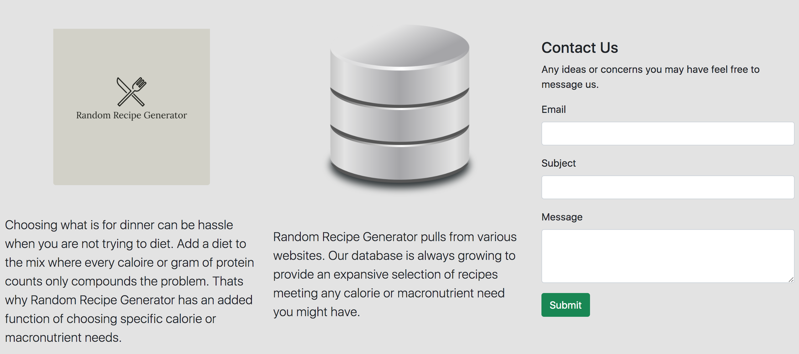
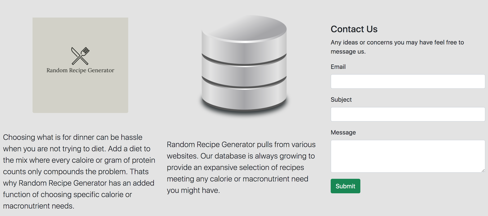

Random Recipe Generator
Random Recipe Generator is my first deviation from laboratory based applications. This app was built by first using the Beautiful Soup python library to scrap recipes from various websites across the internet. The links to these websites, calories, and macronutrient content was then stored in a database. From there the user is able to have a completely random recipe generated for them. The user also has the option of chosing specific calorie or macronutrient needs, a recipe fitting those needs will then be generated.
 
View Code

View Code
Back To Homepage